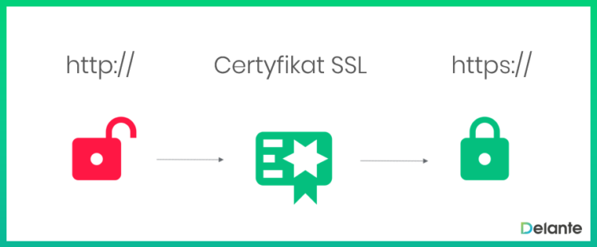

Początek z tworzeniem stron internetowych
Czy tworzenie stron internetowych jest trudne?
Wykonanie strony internetowej nie jest trudne. Na poczatku moze sie to wydawac trudne kiedy nie jeszcze jak to działa. Bardzo często demotywujące do podjęcia się stworzenia strony internetowej są również same wypowiedzi specjalistów, którzy mówią, że „budowa strony internetowej wymaga zaangażowania całego zespołu specjalistów i dlatego tyle musi kosztować”. Jest w tym troche prawdy ale wszystko zależy od tego jakie będziemy mieli wymagania wobec naszej strony. Ważne też są zasady projektowania stron. O poczytaniu o tym odsyłam na tą strone: Zasady projektowania stron internetowych
Pierwsze kroki z tworzeniem stron internetowych
Projektowanie stron internetowych opiera się o zasadzie drag&drop czyli dobrym ułożeniu elementów.
Dobrze wykonany zarys strony sprawia że użytkownik wie od razu gdzie znajdzie rzeczy które go interesują.
Poza tym, w dzisiejszych czasach, dobry projekt strony internetowej wymaga również poczucia estetyki oraz umiejętności w zakresie UX (user experience) i UI (user impression). Dzięki tym znajomością jesteśmy w stanie stworzyć interfejs strony, który będzie dla naszego użytkownika nie tylko estetyczny, ale też przejrzysty.
Istnieją też dwa pojęcia front-end i back-end które na początku przygody warto poznać. Front-end specyfikuje sie w wyglądzie strony i w tym co użytkownik widzi za to back-end zajmuje się serwerami czy bazami danych oraz połączeniem i przesyłaniem informacje na nie. Prawda jest taka że strona by nie istniała bez jednego lub drugiego.
Niezbędna wiedza do rozpoczęcia pisania stron internetowych
- Front-end
- HTML - Hyper text markup language (hipertekstowy język znaczników)
Jest to główne podłoże do pisania stron bez html nie napiszemy żadnej strony ponieważ on odpowiada za strukturę strony.
- CSS - Cascading Style Sheets (Kaskadowe arkusze stylów)
Ten język służy do określania wyglądu strony. Za pomocą niego możesz definiować takie elementy jak rodzaj czicionek, kolor tła i wiele więcej
CSS posiada frameworki takie jak Bootstrap czy Foundation. Umożliwiają one szybsze pisanie stron internetowych ponieważ dodają gotowe komponenty oraz posiadają wbudowaną responsywność. - JavaScript
Jest to język skryptowy. Wykorzystuje się go do tworzenia interaktywnych elementów na stronie.
JavaScript posiada frameworki jak CSS i posiadają tak samo gotowe elementy które przyśpieszą pisanie stron czy aplikacji internetowych lecz przy małych projektach nie ma sensu uzywac framework'ów ponieważ to będzie tylko utrudnienie sobie pracy. najpopularniejsze framework'i to React.js, Angular.js czy Vue.js. - Back-end
- PHP
Służy do przekazywania informacji do baz danych. Funkcjonalności PHP korzysta około 80 proc. stron WWW na świecie. Ma ona zastosowanie w przypadku rozbudowanych aplikacji webowych, gdyż znakomicie sprawdza się w zarządzaniu dużą ilością danych.
- MySQL
czyli system zarządzania relacyjnymi bazami danych. Jest on bardzo popularny, a to m.in. z tego względu, że jest stosunkowo łatwy w obsłudze.
Jak bezpieczeństwo wpływa na naszą strone internetową?
Zapewnienie bezpieczeństwa to jeden z niezwykle istotnych punktów tworzenia strony. W grę wchodzi nie tylko ochrona naszej platformy, ale też użytkowników, którzy z niej korzystają.
W temacie bezpieczeństwa tworzonej strony warto wspomnieć o HTTPS, czyli protokole http, który zawiera dodatkowe zabezpieczenia- dane przesyłane pomiędzy przeglądarką internetową a serwerem są szyfrowane m.in za pomocą certyfikatu SSL. Nieposiadające go witryny internetowe (czyli takie, które łączą się z przeglądarkami za pomocą nieszyfrowanego połączenia) określane są jako niebezpieczne.
Jeśli nie uwzględnimy tego podczas tworzenia naszej strony, możemy wiele stracić. Dlatego też certyfikat SSL jest zawsze dobrym wyborem. Wszystkie dane logowania, maile i inne poufne informacje są wtedy szyfrowane.

Jak tworzyć strony internetowe?
- Samodzielne pisanie strony
Stworzenie strony samemu jest możliwe. Możemy pobrać edytor tekstu np.: Visual studio code i zacząć pisać swoją strone. Dzięki temu możesz łatwo nauczyć się i nabyć doświadczenia w pisaniu stron.
- Pisanie przy użyciu framework'ów do CSS
Jest to pisanie kodu przez siebie w Visual studio code lub innym edytorze tekstu. Framework'i przyśpieszą nam pisanie strony ponieważ na stronie framework'u znajdziemy jego dokumentacje i gotowe elementy do wykorzystania
- Tworzenie stron przy użyciu specjalnych do tego stron
Tworzenie stron internetowych nie jest tylko możliwe za pomocą pisania kodu lecz istnieją strony do tego, gdzie bez pisania kodu możemy stworzyć strone internetową. Spotkamy tez na nich gotowe szablony do wykorzystania. Takie strony to np.: WordPress czy Wix